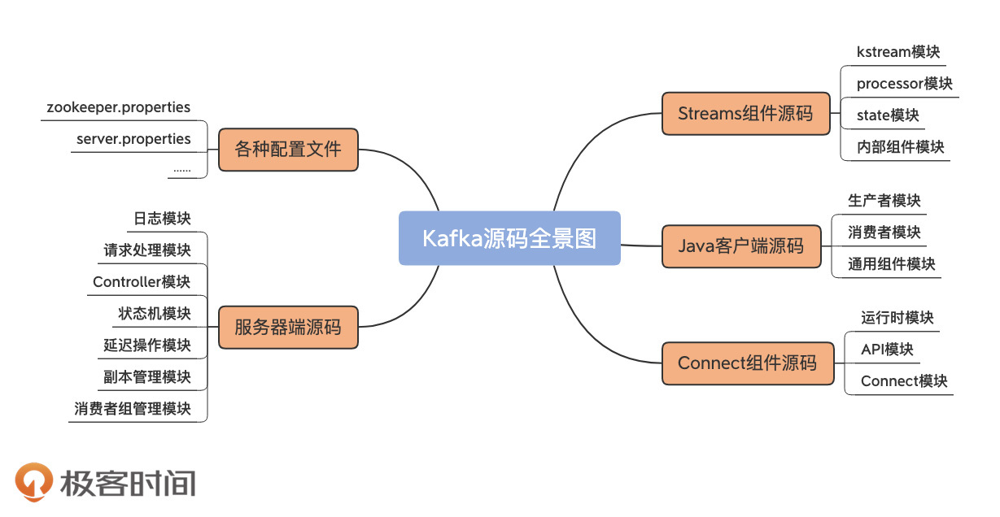
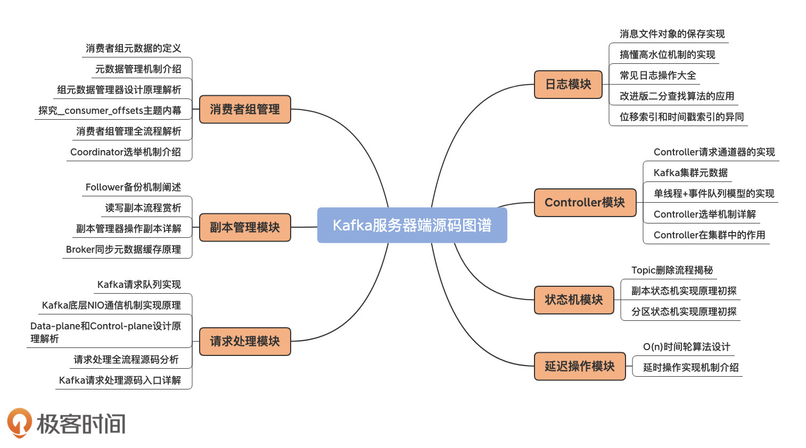
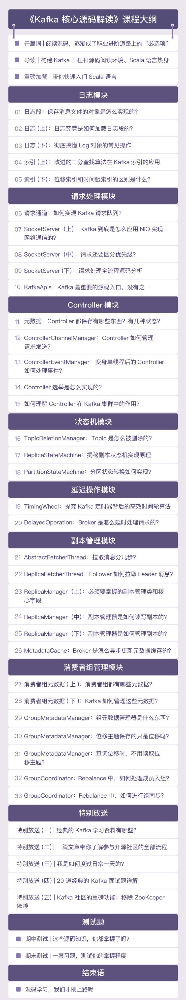

- 00 导读 构建Kafka工程和源码阅读环境、Scala语言热身.md.html
- 00 开篇词 阅读源码，逐渐成了职业进阶道路上的“必选项”.md.html
- 00 重磅加餐 带你快速入门Scala语言.md.html
- 01 日志段：保存消息文件的对象是怎么实现的？.md.html
- 02 日志（上）：日志究竟是如何加载日志段的？.md.html
- 03 日志（下）：彻底搞懂Log对象的常见操作.md.html
- 04 索引（上）：改进的二分查找算法在Kafka索引的应用.md.html
- 05 索引（下）：位移索引和时间戳索引的区别是什么？.md.html
- 06 请求通道：如何实现Kafka请求队列？.md.html
- 07 SocketServer（上）：Kafka到底是怎么应用NIO实现网络通信的？.md.html
- 08 SocketServer（中）：请求还要区分优先级？.md.html
- 09 SocketServer（下）：请求处理全流程源码分析.md.html
- 10 KafkaApis：Kafka最重要的源码入口，没有之一.md.html
- 11 Controller元数据：Controller都保存有哪些东西？有几种状态？.md.html
- 12 ControllerChannelManager：Controller如何管理请求发送？.md.html
- 13 ControllerEventManager：变身单线程后的Controller如何处理事件？.md.html
- 14 Controller选举是怎么实现的？.md.html
- 15 如何理解Controller在Kafka集群中的作用？.md.html
- 16 TopicDeletionManager： Topic是怎么被删除的？.md.html
- 17 ReplicaStateMachine：揭秘副本状态机实现原理.md.html
- 18 PartitionStateMachine：分区状态转换如何实现？.md.html
- 19 TimingWheel：探究Kafka定时器背后的高效时间轮算法.md.html
- 20 DelayedOperation：Broker是怎么延时处理请求的？.md.html
- 21 AbstractFetcherThread：拉取消息分几步？.md.html
- 22 ReplicaFetcherThread：Follower如何拉取Leader消息？.md.html
- 23 ReplicaManager（上）：必须要掌握的副本管理类定义和核心字段.md.html
- 24 ReplicaManager（中）：副本管理器是如何读写副本的？.md.html
- 25 ReplicaManager（下）：副本管理器是如何管理副本的？.md.html
- 26 MetadataCache：Broker是怎么异步更新元数据缓存的？.md.html
- 27 消费者组元数据（上）：消费者组都有哪些元数据？.md.html
- 28 消费者组元数据（下）：Kafka如何管理这些元数据？.md.html
- 29 GroupMetadataManager：组元数据管理器是个什么东西？.md.html
- 30 GroupMetadataManager：位移主题保存的只是位移吗？.md.html
- 31 GroupMetadataManager：查询位移时，不用读取位移主题？.md.html
- 32 GroupCoordinator：在Rebalance中，Coordinator如何处理成员入组？.md.html
- 33 GroupCoordinator：在Rebalance中，如何进行组同步？.md.html
- 特别放送（一）经典的Kafka学习资料有哪些？.md.html
- 特别放送（三）我是怎么度过日常一天的？.md.html
- 特别放送（二）一篇文章带你了解参与开源社区的全部流程.md.html
- 特别放送（五） Kafka 社区的重磅功能：移除 ZooKeeper 依赖.md.html
- 特别放送（四）20道经典的Kafka面试题详解.md.html
- 结束语 源码学习，我们才刚上路呢.md.html
- 捐赠
00 开篇词 阅读源码，逐渐成了职业进阶道路上的“必选项”
开篇词 阅读源码，逐渐成了职业进阶道路上的“必选项”
你好，我是胡夕，Apache Kafka Committer，老虎证券用户增长团队负责人，也是《Apache Kafka实战》这本书的作者。
2019年，我在极客时间开设了我的第一个专栏《Kafka核心技术与实战》，想要帮助Kafka用户掌握Kafka核心设计原理及实战应用技术。时隔一年，我又带来了一个源码专栏。在这个专栏中，我会带你深入到Kafka核心源码，详细分析和讲述那些源码背后的架构思想和编程理念。同时，我还会针对一些棘手问题，给出源码级的解决思路。
为什么要读源码？
谈到源码分析，特别是Apache Kafka这类消息引擎的源码，你可能会说：“我都已经在使用它了，也算是也比较熟练了，何必还要再花费时间去阅读源码呢？”
当然了，一些非Kafka使用者也会说：“我不用Kafka，读源码对我有什么用呢？”
其实，在没有阅读源码之前，我也是这么想的。但是，后来在生产环境上碰到的一件事，彻底改变了我的想法。
我们知道，Kafka Broker端有个log.retention.bytes参数，官网的描述是：它指定了留存日志的最大值。有了这个参数的“帮忙”，我们信誓旦旦地向领导保证，不会过多占用公司原本就很紧张的物理磁盘资源。但是，最终实际占用的磁盘空间却远远超出了这个最大值。
我们查遍了各种资料，却始终找不到问题的根因，当时，我就想，只能读源码碰碰运气了。结果，源码非常清楚地说明了，这个参数能不能起作用和日志段大小息息相关。知道了这一点，问题就迎刃而解了。
这时，我才意识到，很多棘手的问题都要借助源码才能解决。
除此之外，我还发现，在很多互联网公司资深技术岗位的招聘要求上，“读过至少一种开源框架的源码”赫然在列。这也就意味着，阅读源码正在从“加分项”向“必选项”转变，掌握优秀的框架代码实现从NICE-TO-DO变成了MUST-DO。
那，为什么读源码逐渐成为了必选项？它究竟有什么作用呢？下面我结合我自己的经历，和你说说读源码的几点收获。
1. 可以帮助你更深刻地理解内部设计原理，提升你的系统架构能力和代码功力。
作为一款优秀的消息引擎，Kafka的架构设计有很多为人称道的地方，掌握了这些原理将极大地提升我们自身的系统架构能力和代码功力。
当然了，即使你不使用Kafka，也可以借鉴其优秀的设计理念，提升你在其他框架上的系统架构能力。
你可能会问，官网文档也有相应的阐述啊，我单纯阅读文档不就够了吗？
实际上，我一直认为社区官方文档的内容有很大的提升空间，Kafka有许多很棒的设计理念和特性，在文档中并未得到充分的阐述。
我简单举个例子。Kafka中有个非常重要的概念：当前日志段（Active Segment）。Kafka的很多组件（比如LogCleaner）是区别对待当前日志段和非当前日志段的。但是，Kafka官网上几乎完全没有提过它。
所以你看，单纯依赖官网文档的话，肯定是无法深入了解Kafka的。
2. 可以帮你快速定位问题并制定调优方案，减少解决问题的时间成本。
很多人认为，阅读源码需要花费很多时间，不值得。这是一个非常大的误区。
实际上，你掌握的源码知识可以很好地指导你日后的实践，帮助你快速地定位问题的原因，迅速找到相应的解决方案。最重要的是，如果你对源码了然于心，你会很清楚线上环境的潜在问题，提前避“坑”。在解决问题时，阅读源码其实是事半功倍的“捷径”。
如果用时间成本来考量的话，你可以把阅读源码的时间分摊到后续解决各种问题的时间上，你会发现，这本质上是一件划算的事情。
3. 你还能参加Kafka开源社区，成为一名代码贡献者（Contributor）。
在社区中，你能够和全世界的Kafka源码贡献者协同工作，彼此分享交流，想想就是一件很有意思的事情。特别是当你的代码被社区采纳之后，全世界的Kafka使用者都会使用你写的代码。这简直太让人兴奋了，不是吗？
总而言之，阅读源码的好处真的很多，既能精进代码功力，又能锤炼架构技巧，还能高效地解决实际问题，有百利而无一害。
如何用最短的时间掌握最核心的源码？
Kafka代码有50多万行，如果我们直接冲下场开始读，一定会“丈二和尚摸不着头脑”。
毕竟，面对这么多代码，通读一遍的效率显然并不高。为了避免从入门到放弃，我们要用最高效的方式阅读最核心的源码。
通常来说，阅读大型项目的源码无外乎两种方法。
- 自上而下（Top-Down）：从最顶层或最外层的代码一步步深入。通俗地说，就是从 main 函数开始阅读，逐渐向下层层深入，直到抵达最底层代码。这个方法的好处在于，你遍历的是完整的顶层功能路径，这对于你了解各个功能的整体流程极有帮助。
- 自下而上（Bottom-Up）：跟自上而下相反，是指先独立地阅读和搞懂每个组件的代码和实现机制，然后不断向上延展，并最终把它们组装起来。该方法不是沿着功能的维度向上溯源的，相反地，它更有助于你掌握底层的基础组件代码。
这两种方法各有千秋，不过，在学习Kafka源码的过程中，我发现，将两者结合的方法其实是最高效的，即先弄明白最细小单位组件的用途，然后再把它们拼接组合起来，掌握组件组合之后的功能。
具体怎么做呢？首先，你要确认最小单位的组件。我主要是看Kafka源码中的包结构（package structure），比如controller、log、server等，这些包基本上就是按照组件来划分的。我给这些组件确定的优先级顺序是“log–>network–>controller–>server–>coordinator–>……”，毕竟，后面的组件会频繁地调用前面的组件。
等你清楚地了解了单个组件的源码结构，就可以试着切换成自上而下的方法，即从一个大的功能点入手，再逐步深入到各个底层组件的源码。得益于前面的积累，你会对下沉过程中碰到的各层基础代码非常熟悉，这会带给你很大的成就感。比起单纯使用自上而下或自下而上的方法，这套混合方法兼具了两者的优点。
关于如何选择大的功能点，我建议你从Kafka的命令行工具开始这种串联学习，搞明白这个工具的每一步都是怎么实现的，并且在向下钻取的过程中不断复习单个组件的原理，同时把这些组件结合在一起。
随着一遍遍地重复这个过程，你会更清楚各个组件间的交互逻辑，成为一个掌握源码的高手！
知道了方法以后，我们就可以开始Kafka源码的学习了。在深入细节之前，我们先来看下Kafka的源码全景图，找到核心的源码。

从功能上讲，Kafka源码分为四大模块。
- 服务器端源码：实现Kafka架构和各类优秀特性的基础。
- Java客户端源码：定义了与Broker端的交互机制，以及通用的Broker端组件支撑代码。
- Connect源码：用于实现Kafka与外部系统的高性能数据传输。
- Streams源码：用于实现实时的流处理功能。
可以看到，服务器端源码是理解Kafka底层架构特别是系统运行原理的基础，其他三个模块的源码都对它有着强烈的依赖。因此，Kafka最最精华的代码，当属服务器端代码无疑！我们学习这部分代码的性价比是最高的。
专栏是如何设计的？
那，我们就抓紧开始吧。在这个专栏里，我基于自己对服务器端源码结构的理解，特意为你精选了下面这些源码。
这些源码全都是极具价值的组件，也是很多实际线上问题的“高发重灾区”。比如，Kafka日志段的代码逻辑就是很多线上异常的“始作俑者”。掌握这些源码能够大大地缩短你定位问题花费的时间。
我把服务器端源码按照功能划分了7个模块，每个模块会进一步划开多个子部分，详细地给出各个组件级的源码分析。你可以看下这张思维导图的重点介绍。

丰富的流程图+细粒度讲解
在读源码时，我们最常犯两种错误，一种是直接深入最底层的一行行源码之中，陷入细枝末节；另一种是过于粗粒度地学习，学了跟没学没有什么区别。
为了帮助你高效地学习，我摒弃了贪多求全的源码讲解方式，而是采用“流程图+代码注释”相结合的方式，对重点内容进行细粒度讲解，还会结合我的实战经验，给你划重点。
在阅读源码之前，你可以借助图片对各个方法的实现逻辑有个大致的了解。对于重点内容，我会用详细的注释形式帮助你理解。同时，我还绘制了思维导图，帮你总结回顾。
真实的案例讲解，解决你的实战问题
很多人虽然也读源码，却不懂源码可以应用到什么场景、解决什么问题。事实上，我在生产环境中碰到的很多问题，都是没办法单纯依赖官方文档或搜索引擎顺利解决的。只有阅读源码，切实掌握了实现原理，才能找到解决方案。
为了帮你学以致用，我会在专栏里给你分享大量的真实案例，既帮助你提前规避陷阱，也帮你积累一些常见问题的解决方案，有一些甚至是不见诸于文档的“武林秘籍”。
传递社区的最新发展动向
这是专栏最有意思的一部分。我们学习的Kafka源码每天都在不断地演进着，要想玩转Kafka，就必须要知道社区未来的更新计划以及重大功能改进。
我会针对一些具体的主题，给你分享最新的动态资讯。我希望展现在你面前的不再是一行行冰冷的代码，而是一个生动活泼的社区形象，让你真正有参与到社区的感觉。不要小看这种感觉，有的时候，它甚至是支撑你走完源码学习之路的最强大动力。
课外拓展
除此之外，我还会跟你分享一些延伸内容。比如成为Apache Kafka社区的代码贡献者的具体方法、实用的学习资料、经典的面试题讲解等，希望你也不要错过这部分的内容。

最后，我还想再和你说说Scala语言的问题。毕竟，我们将要一起学习的Broker端源码是完全基于Scala的。
不过，这部分源码并没有用到Scala多少高大上的语法特性。如果你有Java语言基础，就更不用担心语言的问题了，因为它们有很多特性非常相似。
即使你不熟悉Scala语言也没关系。你不需要完整、系统地学习这门语言，只要能简单了解基本的函数式编程风格，以及它的几个关键特性，比如集合遍历、模式匹配等，就足够了。
当然了，为了不影响你理解专栏内涉及的源码，我会在“导读”这节课里带你深入了解下Scala语言。同时，在专栏里遇到Scala比较难的语言特性时，我也会和你具体解释。所以，你完全不用担心语言的问题。
好了，现在，我们就正式开启Apache Kafka源码分析学习之旅吧。正所谓：“日拱一卒无有尽，功不唐捐终入海。”阅读源码是个“苦差事”，希望你别轻易放弃。毕竟，掌握了源码，你就走在了很多人的前面。
最后，我很荣幸能够和你在这里相遇，一起学习交流，也欢迎你给我留言，说说你对Kafka源码分析的看法和疑问。
© 2019 - 2023 Liangliang Lee. Powered by gin and hexo-theme-book.